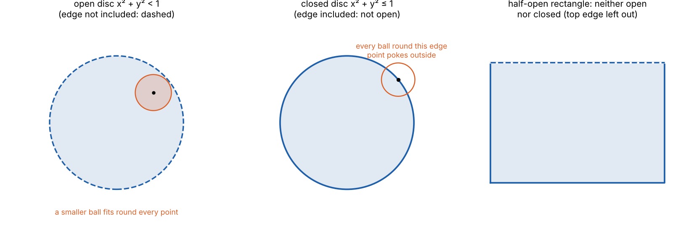
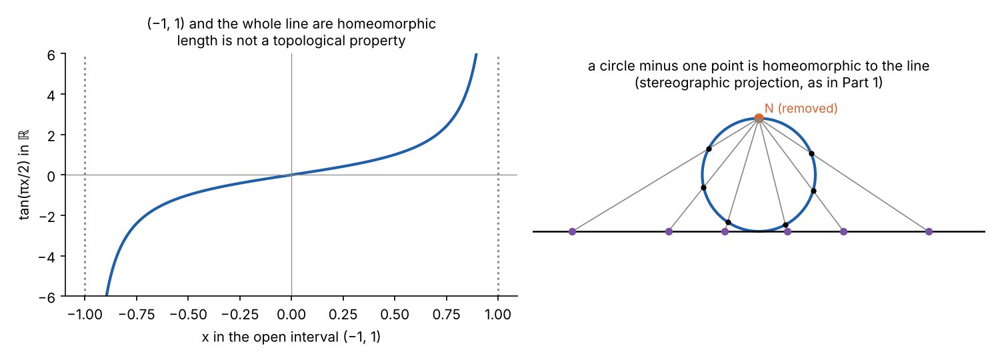
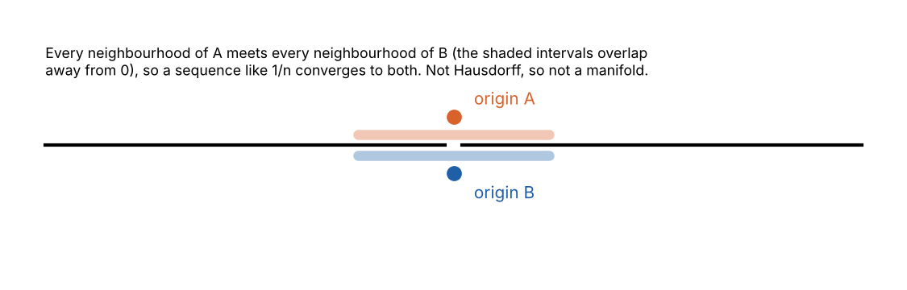
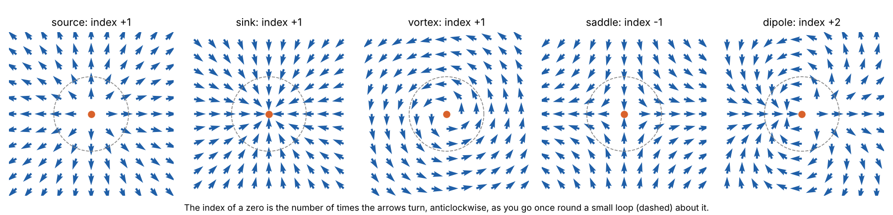
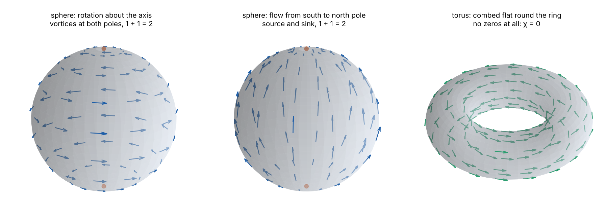

topoView = {
const host = htl.html`<div></div>`;
const mod = await import(new URL("topo.js", document.baseURI).href);
mod.mountTopo(host);
return host;
}The definition of a manifold in Part 1 of General Relativity from Scratch begins: “a topological space that is Hausdorff and second countable, in which every point has an open neighbourhood homeomorphic to an open subset of \(\mathbb{R}^n\)”. Almost every word in that sentence is topology. This explainer builds the vocabulary from the start, with the manifold definition as the goal.
Topology studies the properties of a space that survive stretching and bending, but not tearing or gluing. It keeps the idea of points being near each other, and throws away the idea of distance. A coffee cup and a doughnut are the same to a topologist; a sphere and a doughnut are not.
Open sets: nearness without distance
Start where distance exists. In \(\mathbb{R}^n\), the open ball of radius \(\varepsilon\) around a point \(p\) is the set of points closer than \(\varepsilon\):
\[ B_\varepsilon(p) = \{\,q : |q - p| < \varepsilon\,\}. \]
A set \(U\) is open if every point of \(U\) has some open ball around it that stays entirely inside \(U\). Informally, an open set has no edge: wherever you stand in it, you can move a little in any direction and still be inside.

Open sets in \(\mathbb{R}^n\) have three properties, each easy to check from the definition:
- the empty set \(\varnothing\) and the whole space are open;
- any union of open sets, even infinitely many, is open;
- the intersection of finitely many open sets is open.
The restriction to finite intersections matters. The intervals \((-1/n, 1/n)\) are all open, but their intersection, over every \(n\), is the single point \(\{0\}\), which is not open: no ball around 0 fits inside a single point.
The insight of point-set topology, due largely to Felix Hausdorff in 1914, is that these three properties are all that is needed. Nearness, convergence and continuity can all be defined from the open sets alone, without the distances that were used to define them. (Distances themselves, and the many different ways to define them, are the subject of Metrics: From Distance to the Metric Tensor.)
The definition of a topology
Definition
A topology on a set \(X\) is a collection \(\mathcal{T}\) of subsets of \(X\), called the open sets, such that
- \(\varnothing \in \mathcal{T}\) and \(X \in \mathcal{T}\);
- any union of sets in \(\mathcal{T}\) is in \(\mathcal{T}\);
- any finite intersection of sets in \(\mathcal{T}\) is in \(\mathcal{T}\).
The pair \((X, \mathcal{T})\) is a topological space. A neighbourhood of a point \(p\) is any set containing an open set that contains \(p\).
The same set can carry many topologies. Two extremes exist on every set:
- the discrete topology, in which every subset is open. Every point is isolated from every other;
- the indiscrete topology, in which only \(\varnothing\) and \(X\) are open. No two points can be told apart.
On a set of three points, there are exactly 29 topologies (a brute-force count in src/topology/count.py confirms the known sequence 1, 4, 29, 355 for one to four points). Try building them:
Finite topologies look strange, but they have a use: they are the natural setting for describing which states of a system can be reached from which. Every topology on a finite set corresponds to a preorder on its points.
Closed sets, closure and boundary
A set is closed if its complement is open. Taking complements turns the axioms round: arbitrary intersections and finite unions of closed sets are closed.
“Closed” is not the opposite of “open”. In \(\mathbb{R}\), \([0, 1]\) is closed, \((0, 1)\) is open, \([0, 1)\) is neither, and \(\varnothing\) and \(\mathbb{R}\) are both.
For any set \(A\):
- its interior is the largest open set inside it, the union of all open subsets of \(A\);
- its closure \(\bar A\) is the smallest closed set containing it, the intersection of all closed sets containing \(A\);
- its boundary is the closure minus the interior.
A point \(p\) is in the closure of \(A\) exactly when every neighbourhood of \(p\) meets \(A\). This is “nearness” without distance: \(p\) is arbitrarily close to \(A\) if no open set can separate them. Similarly, a sequence \(x_n\) converges to \(p\) if every neighbourhood of \(p\) contains all but finitely many of the \(x_n\).
Continuity
In analysis, \(f\) is continuous at \(p\) if for every \(\varepsilon > 0\) there is a \(\delta > 0\) such that points within \(\delta\) of \(p\) are sent within \(\varepsilon\) of \(f(p)\). Topology replaces this with a statement about open sets.
Definition
A function \(f: X \to Y\) between topological spaces is continuous if the preimage of every open set is open: \[ V \text{ open in } Y \;\Longrightarrow\; f^{-1}(V) = \{x : f(x) \in V\} \text{ open in } X . \]
For metric spaces, this is the same as the \(\varepsilon\)–\(\delta\) definition. Suppose preimages of open sets are open, and take \(p\) and \(\varepsilon\). The ball \(B_\varepsilon(f(p))\) is open, so its preimage is an open set containing \(p\), so it contains some ball \(B_\delta(p)\), and that \(\delta\) works. Conversely, suppose \(f\) is \(\varepsilon\)–\(\delta\) continuous, \(V\) is open, and \(p \in f^{-1}(V)\). Some ball \(B_\varepsilon(f(p))\) lies in \(V\), and its \(\delta\) gives a ball \(B_\delta(p)\) that \(f\) maps into \(V\), so \(f^{-1}(V)\) contains a ball round each of its points: it is open. \(\blacksquare\)
It is preimages, not images, that behave: a continuous function can map an open set to a set that is not open. The constant function sends all of \(\mathbb{R}\) to a single point.
Homeomorphism: when two spaces are the same
Definition
A homeomorphism is a continuous bijection \(f: X \to Y\) whose inverse is also continuous. If one exists, \(X\) and \(Y\) are homeomorphic: topologically, they are the same space.
A homeomorphism matches open sets with open sets, so it preserves every property defined from them. Some results are surprising at first:

The inverse must be checked separately. The map \(t \mapsto (\cos t, \sin t)\) from \([0, 2\pi)\) to the circle is a continuous bijection, but its inverse jumps from near \(2\pi\) to 0 as you cross the starting point, so it is not continuous. A half-open interval and a circle are not homeomorphic.
This is the word in the manifold definition: a chart is a homeomorphism from an open set of the manifold to an open subset of \(\mathbb{R}^n\). It is what guarantees that coordinates assign nearby numbers to nearby points, and vice versa.
Making new spaces
Subspaces. A subset \(A \subseteq X\) inherits the subspace topology: its open sets are the sets \(U \cap A\) with \(U\) open in \(X\). The sphere gets its topology this way from \(\mathbb{R}^3\), and a small open “cap” of the sphere, which is the intersection of the sphere with an open ball, is open in the sphere though not in \(\mathbb{R}^3\). Openness depends on the space you are in.
Products. \(X \times Y\) has the product topology, generated by products \(U \times V\) of open sets. With it, \(\mathbb{R}^n\) is \(\mathbb{R} \times \dots \times \mathbb{R}\), and a cylinder is a circle times a line.
Quotients. Gluing is the most powerful construction. Given a way of identifying some points of \(X\) with others, the quotient topology on the glued space declares a set open exactly when the set of all points glued into it was open in \(X\). Starting from a square:

The Klein bottle cannot be built in three-dimensional space without passing through itself, yet as a topological space it is perfectly well defined. This is one reason topology works with abstract spaces, not subsets of \(\mathbb{R}^3\). The same freedom lets spacetime be a manifold that is not embedded in anything.
The three conditions in the manifold definition
Hausdorff
A space is Hausdorff if any two distinct points have disjoint neighbourhoods. All metric spaces are: if \(p\) and \(q\) are distance \(d\) apart, the balls of radius \(d/2\) around them do not meet. Its most important consequence is that limits are unique, since a sequence cannot eventually lie inside two disjoint sets at once.
Without it, strange things satisfy the rest of the manifold definition. Take two copies of the real line and glue them together at every point except 0:

In physics this would mean a world line that could end up at two different events, so the condition is assumed.
Second countable
A space is second countable if its topology has a countable base: a countable collection of open sets such that every open set is a union of some of them. For \(\mathbb{R}^n\), balls with rational centres and rational radii form one.
The condition rules out manifolds that are “too big”, such as the long line, made by gluing uncountably many intervals end to end. The long line is locally like \(\mathbb{R}\), and Hausdorff, but it is so long that no sequence can reach its end. Second countability guarantees partitions of unity: families of smooth functions that let local constructions, made chart by chart, be glued into global ones. That is how Part 3 puts a Riemannian metric on any smooth manifold.
Compactness
A space is compact if every covering of it by open sets has a finite subcovering. In \(\mathbb{R}^n\), by the Heine–Borel theorem, a set is compact exactly when it is closed and bounded. The sphere, the torus and \([0, 1]\) are compact. \(\mathbb{R}\) and \((0, 1)\) are not: the open intervals \((1/n, 1)\) cover \((0, 1)\), and no finite number of them do.
Compactness survives continuous maps: the continuous image of a compact space is compact. If \(f: X \to Y\) is continuous and \(\{V_i\}\) covers \(f(X)\) by open sets, the preimages \(f^{-1}(V_i)\) cover \(X\). Finitely many of them do, so the corresponding finitely many \(V_i\) cover \(f(X)\). \(\blacksquare\)
That one-line proof is the argument used in Part 1 to show that the sphere needs at least two charts. A single chart would be a homeomorphism from the compact sphere onto an open subset of \(\mathbb{R}^2\), which would then have to be compact, and so closed and bounded. But the plane is connected (below), so the only non-empty subset of it that is both open and closed is the whole plane, which is not bounded. So no such chart exists.
Connectedness
A space is connected if it cannot be split into two disjoint non-empty open sets. It is path-connected if any two points can be joined by a continuous path. Path-connected spaces are connected; the converse fails for the “topologist’s sine curve”, the graph of \(\sin(1/x)\) for \(x > 0\) together with the segment it oscillates towards at \(x = 0\). For manifolds the two notions coincide.
\(\mathbb{R}\) is connected, which is the topological core of the intermediate value theorem: a continuous image of a connected space is connected, so a continuous real function cannot jump over a value.
Topological invariants
To prove two spaces are not homeomorphic, find a property that one has and the other lacks. Compactness distinguishes the sphere from the plane. Connectedness distinguishes a line from a line with a point removed. Subtler invariants distinguish the sphere from the torus.
The oldest is the Euler characteristic. Divide a surface into polygons with \(V\) vertices, \(E\) edges and \(F\) faces; the number \(\chi = V - E + F\) does not depend on how it is divided. For every convex polyhedron (all homeomorphic to a sphere) \(\chi = 2\): the tetrahedron, cube, octahedron and icosahedron all give \(4 - 6 + 4\), \(8 - 12 + 6\), \(6 - 12 + 8\) and \(12 - 30 + 20\). For a torus, divided into a 3 by 3 grid of squares, \(\chi = 9 - 18 + 9 = 0\). So a sphere and a torus are not homeomorphic.
The Euler characteristic also controls what can live on a space, which the next section explores.
Combing: the hairy ball theorem
A tangent vector field on a surface assigns to each point an arrow lying along the surface, varying continuously: the wind on the Earth’s surface, or the direction of the hair on a head. The question is whether the arrows can be non-zero everywhere.
The hairy ball theorem
Every continuous tangent vector field on the sphere \(S^2\) is zero at some point.
You cannot comb a hairy ball flat: there is always a crown or a bald spot. At any moment, somewhere on Earth, the horizontal wind speed is zero. A torus, by contrast, can be combed perfectly.
A proof. Suppose \(v\) were a tangent vector field on \(S^2\) with no zeros. Scale it to unit length, so that \(v(x)\) is a unit vector perpendicular to \(x\) for each \(x\) on the unit sphere. Then
\[ H(x, t) = \cos(\pi t)\,x + \sin(\pi t)\,v(x), \qquad 0 \le t \le 1, \]
stays on the sphere, because \(x\) and \(v(x)\) are perpendicular unit vectors. At \(t = 0\) it is the identity map; at \(t = 1\) it is the antipodal map \(x \mapsto -x\). So the two maps could be deformed into each other continuously. But a continuous deformation cannot change a map’s degree, the number of times it wraps the sphere round itself, counted with orientation. The identity has degree \(+1\). The antipodal map on \(S^n\) reverses orientation when \(n\) is even, so on \(S^2\) it has degree \(-1\). The contradiction shows \(v\) must vanish somewhere. \(\blacksquare\)
The same argument works on every even-dimensional sphere. On odd-dimensional spheres it fails, and they can be combed: on \(S^3 \subset \mathbb{R}^4\), the field \(v(x_1, x_2, x_3, x_4) = (-x_2, x_1, -x_4, x_3)\) is perpendicular to \(x\) and never zero.
Counting the zeros
At an isolated zero, the index is the number of times the arrows turn, anticlockwise, as you go once round a small loop about the zero:

The Poincaré–Hopf theorem
On a compact manifold, the indices of the zeros of any vector field with isolated zeros add up to the Euler characteristic \(\chi\).
The sum is the same for every vector field, which is the remarkable part. On a sphere it is always 2: two vortices, or a source and a sink, or a dipole, or three sources and a saddle. On a torus it is 0, so zeros can come in cancelling pairs, or not at all.

Heinz Hopf proved the converse in 1926: a compact manifold has a vector field with no zeros if and only if \(\chi = 0\). Non-compact manifolds always have one.
Why spacetime needs to be combable
A Lorentzian metric, the kind spacetime has (Part 3), and a nowhere-zero field of directions are, from the point of view of existence, the same thing.
From a metric to a direction field. At each point, a Lorentzian metric has a light cone, and the timelike directions inside it. With the help of any auxiliary positive-definite metric, one timelike direction can be chosen at each point, continuously: the eigenvector, relative to \(h\), of \(g\)’s single negative eigenvalue (the solution of \(g_{ij}V^j = \lambda h_{ij}V^j\) with \(\lambda < 0\)). So a manifold with a Lorentzian metric has a continuous field of directions that never vanishes. (It is a field of lines, without arrowheads. Choosing an arrowhead consistently everywhere, so that “future” makes sense globally, is called time orientation, and is a further condition.)
From a direction field to a metric. Conversely, suppose \(V\) is a vector field with no zeros. Every manifold carries a positive-definite metric \(h\) (glued together with a partition of unity). Define
\[ g = h - \frac{2\,(hV) \otimes (hV)}{h(V, V)}, \qquad \text{where } (hV)(W) = h(V, W) . \]
In an \(h\)-orthonormal basis whose first vector points along \(V\), this is \(\mathrm{diag}(-1, 1, 1, 1)\): it flips the sign of lengths along \(V\) and leaves the perpendicular directions alone. So \(g\) is Lorentzian, with \(V\) timelike. (Checked in 10,000 random cases in src/topology/check_lorentz.py.)
Putting the two together, with Hopf’s theorem:
Which manifolds can be spacetimes
A manifold admits a Lorentzian metric if and only if it admits a nowhere-vanishing line field. Every non-compact manifold does. A compact manifold does if and only if its Euler characteristic is zero.
So the 2-sphere and the 4-sphere, both with \(\chi = 2\), cannot be spacetimes, for the same reason a hairy ball cannot be combed. A torus can.
Compact spacetimes have time machines. Even where \(\chi = 0\) allows a compact spacetime, Robert Geroch (1967) and Stephen Hawking showed that every compact spacetime contains a closed timelike curve: a world line that returns to its own past. The idea of the proof: the chronological futures of all the points (the events each one can reach on a timelike curve) are open sets that cover the spacetime. Compactness picks out finitely many that still cover it, and a short argument then shows that one of those points must lie in its own future. Since closed timelike curves raise the grandfather paradox, physically reasonable spacetimes are taken to be non-compact, with time, at least, running off to infinity.
Topology and spacetime
Einstein’s equations are local: they relate curvature to matter at each point. They do not fix the global topology of spacetime, which has to be chosen or inferred. Some examples from the series:
- de Sitter space (Part 7) has the topology \(\mathbb{R} \times S^3\): a 3-sphere of space at each moment of time. Space is compact, but time is an infinite line, so the spacetime is not compact, and the 3-sphere, being odd-dimensional, can be combed anyway. Its flat slicing covers a region with topology \(\mathbb{R}^4\), which is why it can look like an ordinary expanding flat universe.
- Anti-de Sitter space, as a hyperboloid, has topology \(S^1 \times \mathbb{R}^3\), with time running round a circle. The closed timelike curves this causes, which compact time directions tend to, are removed by passing to the universal cover, which unwraps the circle into a line: a purely topological step.
- Our universe is consistent with flat space, but flat space need not be infinite: a flat 3-torus, made by gluing opposite faces of a cube, would look the same locally. Searches for repeated patterns in the cosmic microwave background have found none, which puts any such repetition scale beyond roughly the size of the observable universe.
- Wormholes change topology: a space with a wormhole is not homeomorphic to ordinary space, because a loop through the wormhole cannot be shrunk to a point.
Summary
- A topology on a set is a collection of “open” sets closed under arbitrary unions and finite intersections, and containing the empty set and the whole set.
- Continuity means preimages of open sets are open; for metric spaces it is the \(\varepsilon\)–\(\delta\) definition.
- A homeomorphism is a continuous bijection with continuous inverse. Homeomorphic spaces are topologically identical. A chart on a manifold is a homeomorphism onto an open subset of \(\mathbb{R}^n\).
- Subspaces, products and quotients make new spaces. Gluing a square gives the cylinder, Möbius strip, torus, Klein bottle and sphere.
- The manifold definition needs Hausdorff (unique limits; no line with two origins) and second countable (no long line; partitions of unity exist).
- Compactness, connectedness and the Euler characteristic are invariants: they tell spaces apart, and they constrain what can live on them.
- The hairy ball theorem: every vector field on the sphere vanishes somewhere. By Poincaré–Hopf, the zeros’ indices always add up to \(\chi\). A compact manifold can carry a Lorentzian metric only if \(\chi = 0\), and compact spacetimes always contain closed timelike curves.
References
- J. R. Munkres, Topology, 2nd edition (Prentice Hall, 2000), chapters 2–3.
- J. M. Lee, Introduction to Topological Manifolds, 2nd edition (Springer, 2011), chapters 2–4.
- W. A. Sutherland, Introduction to Metric and Topological Spaces, 2nd edition (Oxford, 2009).
- F. Hausdorff, Grundzüge der Mengenlehre (Veit, Leipzig, 1914).
- H. Hopf, “Vektorfelder in n-dimensionalen Mannigfaltigkeiten”, Mathematische Annalen 96, 225 (1926).
- R. Geroch, “Topology in general relativity”, Journal of Mathematical Physics 8, 782 (1967).
- S. W. Hawking and G. F. R. Ellis, The Large Scale Structure of Space-Time, sections 2.6 and 6.4 (Lorentz metrics and compact spacetimes).
- OEIS, A000798: number of different topologies on a set of n labelled elements.
Code: src/topology: count.py (counting topologies, Euler characteristics), check_lorentz.py (the Lorentzian metric construction), figs.py, figs_hairy.py. The checker is topo.js in this post’s folder.